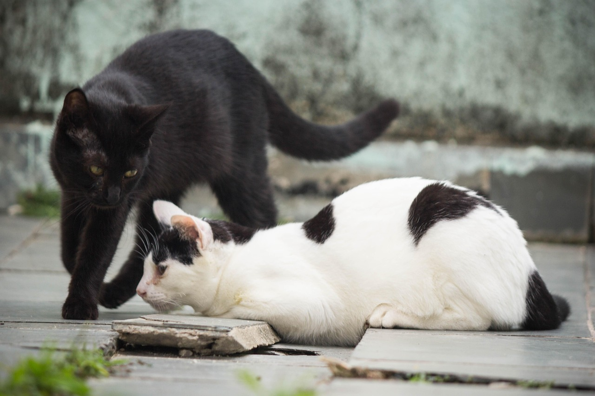

Parásitos de la piel en gatos: señales, tratamiento veterinario y limpieza del hogar

Photo: Tugera / Pixabay
Un gato con la piel que le pica puede tener pulgas, ácaros, garrapatas o una infección cutánea parecida. La regla más importante es que el tratamiento del gato debe venir de un veterinario. Muchos productos para perros son tóxicos para los gatos, y una mala elección puede ser mortal.
Parásitos frecuentes
- pulgas: pequeños insectos oscuros que saltan, causan picazón y caída de pelo;
- ácaros de los oídos: restos oscuros y desmenuzables en el oído y mucho sacudir la cabeza;
- garrapatas: pequeños bultos pegados a la piel, sobre todo en gatos que salen al exterior;
- otros ácaros y tiña (un hongo): zonas sin pelo y piel escamosa o con costras.
Señales a vigilar
Rascarse, morderse el pelo, lamerse en exceso, calvas, costras, piel roja y puntitos negros en el pelaje. Para comprobar si hay excrementos de pulga, peina al gato sobre un papel de cocina blanco: los puntitos que se vuelven rojizos al humedecerlos son excrementos de pulga.
Paso 1: acude a tu veterinario
Cada parásito requiere un tratamiento diferente, y algunos problemas de piel se parecen. Tu veterinario examinará a tu gato, puede tomar una muestra de piel o de cera del oído y recomendará un tratamiento según su edad y su peso.
Paso 2: usa solo lo que recomiende tu veterinario
- Nunca uses productos antipulgas o antigarrapatas para perros en un gato. Algunos contienen ingredientes muy tóxicos para los gatos.
- Sigue exactamente la etiqueta y las instrucciones del veterinario, y no combines productos.
- Los gatitos, las gatas gestantes y los gatos enfermos necesitan cuidados especiales: consulta antes.
- Evita los remedios caseros, los aceites esenciales y los tratamientos improvisados, muchos de los cuales son dañinos para los gatos.
Paso 3: limpia la casa
Las pulgas viven en las alfombras y en la ropa de cama, no solo en el gato. Lava la ropa de cama con agua caliente, aspira con frecuencia suelos y muebles y vacía la bolsa de la aspiradora fuera de casa. Los demás animales de la casa también necesitarán tratamiento: pregunta a tu veterinario.
Paso 4: evita que vuelvan
Un tratamiento preventivo regular recetado por tu veterinario es mucho más eficaz que tratar una infestación. Es importante incluso para los gatos que no salen, porque las pulgas pueden entrar con las personas y otros animales.
Cuándo ir al veterinario con urgencia
Ve rápido si un gatito con pulgas está débil o tiene las encías pálidas, si el gato tiene heridas abiertas, si deja de comer o si está muy decaído.